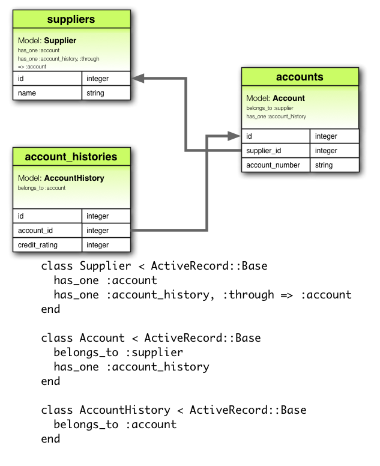

1 Associações, Por quê?
Por que precisamos de associações entre os modelos? Porque tornam mais fácil e mais simples operações comuns no código. Considere, por exemplo, uma simples aplicação Rails que inclui um modelo para os clientes e um modelo para as encomendas. Cada cliente pode ter muitas encomendas. Sem as associações, os modelos de declarações seriam mais ou menos assim:
class Customer < ActiveRecord::Base
end
class Order < ActiveRecord::Base
end
Agora, suponha se quisesse acrescentar uma nova encomenda de um cliente existente. Gostaríamos de fazer algo parecido com isto:
@order = Order.create(:order_date => Time.now, :customer_id => @customer.id)
Ou apagar um cliente, e garantindo que todas as suas encomendas fossem excluídas também:
@orders = Order.find_by_customer_id(@customer.id)
@orders.each do |order|
order.destroy
end
@customer.destroy
Com as associações do ActiveRecord, podemos simplificar – e outras – operações por declarações dizendo que existe uma conexão entre os dois modelos. Veja abaixo o código revisado para a criação de clientes e encomendas:
class Customer < ActiveRecord::Base
has_many :orders, :dependent => :destroy
end
class Order < ActiveRecord::Base
belongs_to :customer
end
Com essa mudança, criando uma nova ordem para um determinado cliente é mais fácil:
@order = @customer.orders.create(:order_date => Time.now)
Excluindo um cliente e todas as suas encomendas é muito mais fácil:
@customer.destroy
Para saber mais sobre os diferentes tipos de associações, leia a próxima seção deste Guia. Seguido por alguns truques e dicas para trabalhar com as associações e, em seguida, por uma referência completa para os métodos e opções para as associações em Rails.
2 Os tipos de associações
Em Rails, uma associação é uma conexão entre os dois modelos do ActiveRecord. As associações são implementadas usando macro de chamadas, de modo que você pode adicionar funcionalidades nos seus modelos. Por exemplo, declarando que um modelo possui belongs_to com outro, você instrui o Rails a manter as informações de Chave Primária entre instâncias dos dois modelos, e você também receberá um número métodos úteis adicionado ao seu modelo. Rails suporta seis tipos de associação:
- belongs_to
- has_one
- has_many
- has_many :through
- has_one :through
- has_and_belongs_to_many
No restante deste guia, você aprenderá a declarar e utilizar as diversas formas de associações. Mas, primeiro, uma introdução rápida a situações em que cada tipo de associação é adequado.
2.1 Associação belongs_to
Uma associação belongs_to cria uma conexão um-para-um com outro modelo, de modo a que cada instância do modelo com a declaração “pertence a” uma instancia de um outro modelo. Por exemplo, se sua aplicação incluir clientes e encomendas, e cada encomenda pode ser atribuído exatamente um cliente, você declararia o modelo desta forma:
class Order < ActiveRecord::Base
belongs_to :customer
end

2.2 A Associação has_one
A associação has_one também prevê a criação de uma conexão um-para-um com outro modelo, mas com uma semântica um pouco diferente (e conseqüências). Esta associação indica que cada instância de um modelo contém ou possui uma instancia de outro modelo. Por exemplo, se cada um fornecedor na sua aplicação possui somente uma conta, você iria declarar o modelo fornecedor como este:
class Supplier < ActiveRecord::Base
has_one :account
end

2.3 A Associação has_many
Uma associação has_many indica uma conexão um-para-muitos com outro modelo. Você irá encontrar muitas vezes esta associação do “outro lado” de uma associação belongs_to. Esta associação indica que cada instância do modelo possui uma ou mais instancias do outro modelo. Por exemplo, em uma aplicação contendo clientes e encomendas, o modelo cliente deve ser declarado como este:
class Customer < ActiveRecord::Base
has_many :orders
end
O nome do outro modelo é pluralizado quando declarado uma associação has_many.

2.4 A Associação has_many :through
Um associação has_many :through é freqüentemente utilizado para criar um conexão muitos-para-muitos com outro modelo. Esta associação indica que a declaração do modelo possa ser compensada com zero ou mais instancias de outro modelo “através de” um processo de um terceiro modelo. Por exemplo, considere uma prática médica onde pacientes podem marcar para ver médicos. As declarações relevantes da associação devem ser semelhantes a este:
class Physician < ActiveRecord::Base
has_many :appointments
has_many :patients, :through => :appointments
end
class Appointment < ActiveRecord::Base
belongs_to :physician
belongs_to :patient
end
class Patient < ActiveRecord::Base
has_many :appointments
has_many :physicians, :through => :appointments
end

A associação has_many :through é também útil para a criação de “atalhos” através de associações has_many aninhadas. Por exemplo, se um documento tem muitas seções, e uma seção possui muitos parágrafos, você pode algumas vezes pegar uma simples coleção de todos os parágrafos no documento. Você poderia declarar desta forma:
class Document < ActiveRecord::Base
has_many :sections
has_many :paragraphs, :through => :sections
end
class Section < ActiveRecord::Base
belongs_to :document
has_many :paragraphs
end
class Paragraph < ActiveRecord::Base
belongs_to :section
end
2.5 A Associação has_one: through
Uma associação has_one :through cria uma conexão de um-para-um com outro modelo. Esta associação indica que a declaração do modelo possa ser combinada com uma instancia de outro modelo através de um terceiro modelo. Por exemplo, se cada fornecedor possui uma conta, e cada conta está associada a um histórico da conta, então o modelo cliente poderá ser declarado desta forma:
class Supplier < ActiveRecord::Base
has_one :account
has_one :account_history, :through => :account
end
class Account < ActiveRecord::Base
belongs_to :supplier
has_one :account_history
end
class AccountHistory < ActiveRecord::Base
belongs_to :account
end

2.6 A Associação has_and_belongs_to_many
Uma associação has_and_belongs_to_many cria uma conexão direta muitos-para-muitos com outro modelo, sem intervir no modelo. Por exemplo, se a sua aplicação incluir peças e conjuntos, onde cada conjunto inclui várias peças e que cada peça aparece em muitos conjuntos, você poderia declarar os modelos desta maneira:
class Assembly < ActiveRecord::Base
has_and_belongs_to_many :parts
end
class Part < ActiveRecord::Base
has_and_belongs_to_many :assemblies
end

2.7 Escolhendo Entre belongs_to e has_one
Se você deseja criar uma relação 1×1 entre dois modelos, será necessário adicionar a um belongs_to e ao outro has_one. Como você sabe quem é quem?
A distinção está no lugar onde você colocou a chave estrangeira (ele fica na tabela da classe que foi declarada a associação belongs_to), mas você deveria refletir um pouco mais sobre o real significado desses dados. O relacionamento has_one fala alguma coisa para os seus – ou seja, algo que aponta de volta para você. Por exemplo, faz mais sentido dizer que um fornecedor possui uma conta do que uma conta que possui um fornecedor. Isso sugere que o relacionamento correto é algo como este:
class Supplier < ActiveRecord::Base
has_one :account
end
class Account < ActiveRecord::Base
belongs_to :supplier
end
A migração correspondente se parece com isso:
class CreateSuppliers < ActiveRecord::Migration
def self.up
create_table :suppliers do |t|
t.string :name
t.timestamps
end
create_table :accounts do |t|
t.integer :supplier_id
t.string :account_number
t.timestamps
end
end
def self.down
drop_table :accounts
drop_table :suppliers
end
end
Usando t.integer :supplier_id faz a nomeação da chave estrangeira óbvia e explicitamente. Nas versões atuais do Rails, você pode abstrair a implementação deste detalhe usando t.references :supplier.
2.8 Escolhendo Entre has_many :through e has_and_belongs_to_many
Rails oferece duas maneiras diferentes para declarar um relacionamento muitos-para-muitos entre modelos. A maneira mais simples é usar has_and_belongs_to_many, que permite que você faça a associação diretamente:
class Assembly < ActiveRecord::Base
has_and_belongs_to_many :parts
end
class Part < ActiveRecord::Base
has_and_belongs_to_many :assemblies
end
A segunda forma de declarar o relacionamento muitos-para-muitos é usar has_many :through. Isto faz com que crie uma associação indiretamente, através de um join no modelo:
class Assembly < ActiveRecord::Base
has_many :manifests
has_many :parts, :through => :manifests
end
class Manifest < ActiveRecord::Base
belongs_to :assembly
belongs_to :part
end
class Part < ActiveRecord::Base
has_many :manifests
has_many :assemblies, :through => :manifests
end
A regra é simples, você deve criar um relacionamento has_many :through se você precisa trabalhar com o relacionamento do modelo como uma entidade independente. Se você não precisa fazer nada com relacionamento do modelo, pode ser mais simples se criar um relacionamento has_and_belongs_to_many (mas você precisa se lembrar que precisa criar joins nas tabelas do banco de dados).
Você deve usar has_many :through se você precisar de validações, callbacks (chamadas), ou atributos extras no join do modelo.
2.9 Associações polimórficas
Um pouco mais avançado é o twist em associações polimórficas. Com associações polimórficas, um modelo pode pertencer a mais de um modelo, em uma única associação. Por exemplo, imagine que você possa ter um modelo foto que pertence a um empregado ou ao modelo produto. Veja como isso poderia ser declarada:
class Picture < ActiveRecord::Base
belongs_to :imageable, :polymorphic => true
end
class Employee < ActiveRecord::Base
has_many :pictures, :as => :imageable
end
class Product < ActiveRecord::Base
has_many :pictures, :as => :imageable
end
Você pode pensar em uma declaração belongs_to polimórfica criando uma interface que pode ser usada por qualquer outro modelo. A partir de uma instância do modelo Employee, você pode recuperar uma coleção de fotos: @employee.pictures. Da mesma forma, você pode usar @product.pictures. Se você tem uma instancia do modelo Picture você pode pegar seu pai através @picture.imageable. Para que isto funcione, você necessita declarar tanto uma coluna chave estrangeira e uma coluna tipo no modelo declarado com uma interface polimórficas:
class CreatePictures < ActiveRecord::Migration
def self.up
create_table :pictures do |t|
t.string :name
t.integer :imageable_id
t.string :imageable_type
t.timestamps
end
end
def self.down
drop_table :pictures
end
end
Esta migração pode ser simplificada utilizando o formulário t.references:
class CreatePictures < ActiveRecord::Migration
def self.up
create_table :pictures do |t|
t.string :name
t.references :imageable, :polymorphic => true
t.timestamps
end
end
def self.down
drop_table :pictures
end
end

2.10 Self Joins
Na criação de um modelo de dados, às vezes você irá encontrar um modelo que deverá ter uma relação a si própria. Por exemplo, você pode armazenar todos os empregados em uma única base de dados, mas ser capaz de rastrear relacionamentos entre gerentes e subordinados. Esta situação pode ser modelada com as associações com ele mesmo:
class Employee < ActiveRecord::Base
has_many :subordinates, :class_name => "Employee",
:foreign_key => "manager_id"
belongs_to :manager, :class_name => "Employee"
end
Com essa configuração, você pode utilizar @employee.subordinates e @employee.manager.
3 Dicas, Truques e Avisos
Aqui algumas coisas que você deve saber para fazer um uso eficiente das associações do Active Record em suas aplicações Rails:
- Controlando Caching
- Evitando colisões com nomes
- Atualizando o schema
- Controlando o escopo das associações
3.1 Controlando Caching
Todos os métodos de associação são construídos em torno de um caching que mantém o resultado das queries recentes disponíveis para futuras operações. O cache é compartilhado mesmo entre métodos. Por exemplo:
customer.orders # retornar todas as orders(encomendas) do banco de dados
customer.orders.size # usa a cópia no cache de orders
customer.orders.empty? # usa a cópia no cache de orders
Mas e se você quiser recarregar o cache, porque seus dados foram alterados em outra parte da aplicação? Apenas passe true para a chamada da associação:
customer.orders # retornar todas as orders(encomendas) do banco de dados
customer.orders.size # usa a cópia no cache de orders
customer.orders(true).empty? # desconsidera a copia do cache e faz a busca no banco de dados novamente
3.2 Evitando colisões com nomes
Você não é livre para usar qualquer nome para suas associações. Porque criando uma associação é criado um método com este nome do model, é uma péssima idéia usar um nome de associação que já foi usado para um método de instância para ActiveRecord::Base . O método de associação iria sobrescrever o método inicial e quebrar as coisas. Então, attributes ou connection são nomes impróprios para associações.
3.3 Atualizando o schema
Associações são extremamente úteis, mas não são mágicas. Você é responsável por manter seu esquema do banco de dados sincronizado com suas associações. Na prática, isto significa duas coisas. Primeiro, você deve criar as chaves estrangeiras apropriadas:
class Order < ActiveRecord::Base
belongs_to :customer
end
Esta declaração precisar ser suportada pela devida declaração de chave estrangeira na tabela orders:
class CreateOrders < ActiveRecord::Migration
def self.up
create_table :orders do |t|
t.order_date :datetime
t.order_number :string
t.customer_id :integer
end
end
def self.down
drop_table :orders
end
end
Se você criar alguma associação depois que você tiver construído o respectivo model, você precisa se lembrar de criar um migradtion add_column para prover a chave estrangeira adequada.
Segundo, se você criar uma associação has_and_belongs_to_many , você precisa explicitamente criar uma tabela para o join. A menos que o nome da tabela para o join seja explicitamente especificada usando a opção :join_table , Active Record cria o nome usando uma ordem léxica de acordo com os nomes das classes. Então uma associação entre os modelos customer e order irá gerar uma tabela para a junção com o nome “customers_orders” porque o “c” é superior ao “o” no ordenamento léxico.
A precedência entre nomes de modelos é calculada usando o operado < para String. O que significa que as strings são de tamanhos diferentes, e a string é menor quando comparada com outra com tamanho menor, então a string maior será considerada com maior precedência léxica que a menor. Por exemplo, seria de se esperar que as tabelas “paper_boxes” e “papers” iriam gerar uma tabela de associação com o “papers_paper_boxes” por causa do tamanho de “paper_boxes”, mas de fato o nome da tabela de associação será “paper_boxes_papers”( porque o sublinhado ‘_’ e lexicograficamente menor que ‘s’ em encodings comuns).
Independente do nome, você deve gerar manualmente a tabela de associação com uma migration apropriada. Por exemplo, considere esta associação:
class Assembly < ActiveRecord::Base
has_and_belongs_to_many :parts
end
class Part < ActiveRecord::Base
has_and_belongs_to_many :assemblies
end
Este código precisa ser contemplado por uma migration para criar a tabela assemblies_parts . Esta tabela deve ser criada sem uma primary key (chave primária)
class CreateAssemblyPartJoinTable < ActiveRecord::Migration
def self.up
create_table :assemblies_parts, :id => false do |t|
t.integer :assembly_id
t.integer :part_id
end
end
def self.down
drop_table :assemblies_parts
end
end
3.4 Controlando o escopo das associações
Por padrão, associações enxergam objetos apenas no módulo atual. Isto pode ser importante quando você declara modelos Active Record dentro de um módulo. Por exemplo:
module MyApplication
module Business
class Supplier < ActiveRecord::Base
has_one :account
end
class Account < ActiveRecord::Base
belongs_to :supplier
end
end
end
Isto irá funcionar, porque tanto a classe Supplier quanto a classe Account são definidas com o mesmo escopo. Mas o código abaixo não funcionará, porque Supplier e Account são definidos em escopos diferentes:
module MyApplication
module Business
class Supplier < ActiveRecord::Base
has_one :account
end
end
module Billing
class Account < ActiveRecord::Base
belongs_to :supplier
end
end
end
Para associar um model com um outro model em um escopo diferente, você precisa especificar o nome completo da classe na declaração de sua associação:
module MyApplication
module Business
class Supplier < ActiveRecord::Base
has_one :account, :class_name => "MyApplication::Billing::Account"
end
end
module Billing
class Account < ActiveRecord::Base
belongs_to :supplier, :class_name => "MyApplication::Business::Supplier"
end
end
end
4 Referência Detalhada sobre Associações
As seções seguintes detalham cada tipo de associação, incluindo métodos que elas adicionam e as opções que você pode usar quando estiver declarando uma associação.
4.1 A associação belongs_to
Associação belongs_to (pertence á) cria um dependência de um-para-um com outro modelo. Em termos de banco de dados, esta associação diz que esta classe onde belongs_to for chamado irá conter a chave estrangeira. Mas se a outra classe contém a chave estrangeira então você deve usar has_one ao invés de belongs_to.
4.1.1 Métodos Adicionados pelo belongs_to
Quando você declara uma associação belongs_to, a classe que declara automaticamente ganha cinco métodos relacionados a associação:
- association(force_reload = false)
- association=(associate)
- association.nil?
- build_association(attributes = {})
- create_association(attributes = {})
Em todos estes métodos, association é substituído pelo símbolo passado como primeiro argumento ao belongs_to. Por exemplo:
class Order < ActiveRecord::Base
belongs_to :customer
end
Cada instância do modelo order vai ter estes métodos:
customer
customer=
customer.nil?
build_customer
create_customer
4.1.1.1 association(force_reload = false)
O método association returna o objeto associado, se existir. Se nenhum objeto associado for encontrado então, seu retorno será nil .
@customer = @order.customer
Se o objeto associado já tiver sido buscado no banco de dados para este objeto, a versão cacheda será retornada. Para substituir esse comportamento (e force o banco de dados a ler), passe true para o argumento force_reload .
4.1.1.2 association=(associate)+
O método association= atribui um objeto associado para este objeto. Nos bastidores, isto significa buscar a chave primária do objeto associado e definir esta, como chave estrangeira para o mesmo valor.
@order.customer = @customer
4.1.1.3 association.nil?
O método association.nil? retorna true se não existir nenhum objeto associado.
if @order.customer.nil?
@msg = "No customer found for this order"
end
4.1.1.4 build_association(attributes = {})
O método build_association retorna um novo objeto do tipo associado. Este objeto será instanciado a partir dos atributos passados, e linkando este objeto, uma chave estrangeira será definida, mas o objeto associado ainda não será salvo.
@customer = @order.build_customer({:customer_number => 123, :customer_name => "John Doe"})
4.1.1.5 create_association(attributes = {})
O método create_association retorna um novo objeto do tipo associado. Este objeto será instanciado a partir dos atributos passados, e linkando este objeto, uma chave estrangeira será definida. Porém, o objeto associado será salvo (assumindo que passe pelas validações).
@customer = @order.create_customer({:customer_number => 123, :customer_name => "John Doe"})
4.1.2 Opções para belongs_to
Em muitas situações, você pode usar o comportamento padrão do belongs_to sem nenhuma customização. Mas apesar da ênfase que o Rails faz em convenção sobre customização, você poder alterar este comportamento de várias formas. Esta sessão cobre as opções que você pode passar quando criar uma associação belongs_to . Por exemplo, uma associação com várias opções pode parecer com isto:
class Order < ActiveRecord::Base
belongs_to :customer, :counter_cache => true, :conditions => "active = 1"
end
A associação belongs_to suporta estas opções:
- :autosave
- :class_name
- :conditions
- :counter_cache
- :dependent
- :foreign_key
- :include
- :polymorphic
- :readonly
- :select
- :validate
4.1.2.1 :autosave
Se você definir a opção :autosave como true, o Rails irá salvar quaisquer membros carregados e destruir membros que estejam marcados para serem destruídos sempre que você salvar o objeto que possui as associações.
4.1.2.2 :class_name
Se o nome do outro modelo não puder ser derivado do nome da associação, você pode usar a opção :class_name para informar o nome do modelo. Por exemplo, se uma “order” pertence á um “customer”, mas o nome atual do modelo que contém “customer” é Patron, você precisa definir desta forma:
class Order < ActiveRecord::Base
belongs_to :customer, :class_name => "Patron"
end
4.1.2.3 :conditions
Opção :conditions deixa você especificar as condições que o objeto associado precisa cumprir ( na sintaxe usada por uma cláusula SQL WHERE ).
class Order < ActiveRecord::Base
belongs_to :customer, :conditions => "active = 1"
end
4.1.2.4 :counter_cache
A opção :counter_cache pode ser usada para fazer a busca do número de objetos associados, mais eficiente. Considere estes modelos:
class Order < ActiveRecord::Base
belongs_to :customer
end
class Customer < ActiveRecord::Base
has_many :orders
end
Com esta declaração, perguntando pelo valor de @customer.orders.size requer uma chamada para o banco de dados para executar uma query COUNT(*) . Para evitar esta chamada, você pode adicionar um contra cache ao modelo pertencente:
class Order < ActiveRecord::Base
belongs_to :customer, :counter_cache => true
end
class Customer < ActiveRecord::Base
has_many :orders
end
Com estas declarações, Rails vai manter o valor do cache atualizado, e então retornar o valor como resposta ao método .size .
Apesar da opção :counter_cache ser especificada no modelo que inclui a declaração belongs_to, a coluna atual precisa ser adicionada ao modelo associado . No caso acima, você deveria adicionar uma coluna orders_count ao modelo Customer . Você pode sobrescrever a nome padrão da coluna se você precisar:
class Order < ActiveRecord::Base
belongs_to :customer, :counter_cache => :count_of_orders
end
class Customer < ActiveRecord::Base
has_many :orders
end
Colunas de counter cache são adicionadas ao model que as contém como atributos read-only através do attr_readonly.
4.1.2.5 :dependent
Se você definir a opção :dependent para :destroy, então excluindo este objeto será chamado o método destroy no objeto associado para destruir este objeto. Se você definir a opção :dependent para :delete, então excluindo este objeto irá excluir o objeto associado sem chamar o método destroy method.
Você não deve especificar esta opção em uma associação belong_to que esteja conectada com uma associação has_many. Se o fizer, resultará em registros orfãos em seu banco de dados.
4.1.2.6 :foreign_key
Por convenção, Rails adivinha que a coluna que será usada para guardar a chave estrangeira neste model será o nome da associação com o sufixo _id . A opção :foreign_key permite você definir o nome da chave estrangeira diretamente:
class Order < ActiveRecord::Base
belongs_to :customer, :class_name => "Patron", :foreign_key => "patron_id"
end
Em caso algum, Rails irá criar as colunas de chave estrangeira para você. Você precisa explicitamente defini-las como parte de suas migrations.
4.1.2.7 :include
Você pode usar a opção :include para especificar as associações de segunda ordem que devem ser eager-loaded (pré-carregada) quando esta associação for utilizada. Por exemplo:
class LineItem < ActiveRecord::Base
belongs_to :order
end
class Order < ActiveRecord::Base
belongs_to :customer
has_many :line_items
end
class Customer < ActiveRecord::Base
has_many :orders
end
Se você frequentemente returnar customers diretamente de line items (@line_item.order.customer), então você pode fazer seu código um pouco mais eficiente incluindo customers na associação de line items para orders:
class LineItem < ActiveRecord::Base
belongs_to :order, :include => :customer
end
class Order < ActiveRecord::Base
belongs_to :customer
has_many :line_items
end
class Customer < ActiveRecord::Base
has_many :orders
end
Não há necessidade de usar :include para associações imediatas – significa que, se você tiver Order belongs_to :customer, então customer é eager-loaded (pré-carregado) automaticamente quando ele for necessário.
4.1.2.8 :polymorphic
Passando true para a opção :polymorphic indica que isso será uma associação polymorphic. Associações polimórficas já foram discutidas em detalhes neste guia.
4.1.2.9 :readonly
Se você definir a opção :readonly para true, então o objeto associado será de apenas leitura quando for retornado pela associação.
4.1.2.10 :select
A opção :select permite que você sobrescreva a cláusula SQL SELECT que é usada para retornar dados sobre o objeto associado. Por padrão, Rails retorna todas as colunas.
Se você definir a opção :select em uma associação belongs_to , você também deve definir a foreign_key para garantir resultados corretos.
4.1.2.11 :validate
Se você definir a opção :validate para true, então os objetos associados serão validados quando você salvar este objeto. Por padrão, esta opção é false:, objetos associados não serão validados quando este objeto for gravado.
4.1.3 Quando Objetos são Gravados?
Atribuir um objeto a uma associação belongs_to não o grava automaticamente. Isto não grava cada objeto associado.
4.2 Associação has_one
A associação has_one cria uma relação um-para-um com outro model. Se tratando de banco de dados, esta associação diz que a outra classe terá a chave estrangeira. Se esta class possuir a chave estrangeira, então você deve usar um belongs_to ao invés.
4.2.1 Métodos Adicionados pelo has_one
Quando você declara a associação has_one, a classe declarante automaticamente ganha cinco métodos relacionados a associação:
- association(force_reload = false)
- association=(associate)
- association.nil?
- build_association(attributes = {})
- create_association(attributes = {})
Em todos estes métodos, association são substituídos pelo símbolo passado como o primeiro argumento do método has_one . Por exemplo, a declaração abaixo:
class Supplier < ActiveRecord::Base
has_one :account
end
Cada instância do model Supplier irá conter os seguintes métodos:
account
account=
account.nil?
build_account
create_account
4.2.1.1 association(force_reload = false)
O método association retorna o objeto associado, se houver algum. Se nenhum objeto associado for encontrado, retornará nil.
@account = @supplier.account
Se o objeto associado já tiver sido buscado do banco de dados para este objeto (@supplier), a versão cacheada será retornada. Para sobrescrever este comportamento ( e força a leitura do banco de dados), passe true para o argumento force_reload .
4.2.1.2 association=(associate)
O método association= atribui um objeto associado a esta associação. Por trás dos panos, isto significa extrair a chave primária do objeto e definir a chave estrangeira do objeto associado ao mesmo valor.
@suppler.account = @account
4.2.1.3 association.nil?
O método association.nil? retorna true se não houver nenhum objeto associado.
if @supplier.account.nil?
@msg = "No account found for this supplier"
end
4.2.1.4 build_association(attributes = {})
O método build_association retorna um novo objeto do tipo associado. Este objeto será instanciado a partir do atributos passados, e será associado através de sua chave estrangeira, mas o objeto associado não será gravado.
@account = @supplier.build_account({:terms => "Net 30"})
4.2.1.5 create_association(attributes = {})
O método create_association retorna um novo objeto do tipo associado. Este objeto será instanciado a partir do atributos passados, e será associado através de sua chave estrangeira. Porém, o objeto associado será gravado ( assumindo que ele passe por todas as validações).
@account = @supplier.create_account({:terms => "Net 30"})
4.2.2 Opções para has_one
Em várias situações, você pode usar o comportamento padrão do has_one sem nenhuma customização. Apesar da ênfase do Rails em convenção sobre customização, você pode alterar este comportamento de várias formas. Esta seção cobre as opções que você pode passar quando criar um associação has_one. Por exemplo, uma associação com várias opções pode parecer com isto:
class Supplier < ActiveRecord::Base
has_one :account, :class_name => "Billing", :dependent => :nullify
end
A associação has_one suporta essas opções:
- :as
- :autosave
- :class_name
- :conditions
- :dependent
- :foreign_key
- :include
- :order
- :primary_key
- :readonly
- :select
- :source
- :source_type
- :through
- :validate
4.2.2.1 :as
Definindo a opção :as indica que esta será uma associação polimórfica. Associações polimórficas já foram discutidas em detalhes neste guia.
4.2.2.2 :autosave
Se você definir a opção :autosave para true, Rails irá salvar qualquer membro carregado e destroir os membros que estiverem marcados para serem destruídos quando salvar o objeto paí.
4.2.2.3 :class_name
Se o nome do outro modelo não puder ser adivinhado a partir do nome da associação, você pode usar a opção :class_name para fornecer o nome da classe. Por exemplo, se fornecedor(supplier) possui uma conta(account), mas o nome do modelo atual que contém as contas (accounts) é Billing, você precisa definir as coisas como abaixo:
class Supplier < ActiveRecord::Base
has_one :account, :class_name => "Billing"
end
4.2.2.4 :conditions
A opção :conditions permite que você especifique as condições que o objeto associado deve satisfazer ( a sintaxe é usada por uma cláusula SQL WHERE ).
class Supplier < ActiveRecord::Base
has_one :account, :conditions => "confirmed = 1"
end
4.2.2.5 :dependent
Se você definir a opção :dependent para :destroy, ao apagar este objeto irá chamar o método destroy no objeto associado para apagá-lo também. Se você definir a opção :dependent para :delete, então apagando este objeto irá excluir o objeto associado sem chamar o método destroy. Se você definir a opção :dependent to :nullify, ao excluir este objeto irá definir a chave estrangeira do objeto associado para NULL.
4.2.2.6 :foreign_key
Por convenção, Rails adivinha que a coluna usada para guardar a chave estrangeira no outro modelo é o nome do modelo com o sufixo _id adicionada. A opção :foreign_key permite que você defina o nome da chave estrangeira diretamente:
class Supplier < ActiveRecord::Base
has_one :account, :foreign_key => "supp_id"
end
Em nenhum caso, Rails irá criar a coluna da chave estrangeira para você. Você precisa defini-la como parte de suas migrations.
4.2.2.7 :include
Você pode usar a opção :include para especificar uma associação de segunda ordem que deve ser pré carregada (eager-loaded) quando a associação for usar. Por exemplo, considere os modelos abaixo:
class Supplier < ActiveRecord::Base
has_one :account
end
class Account < ActiveRecord::Base
belongs_to :supplier
belongs_to :representative
end
class Representative < ActiveRecord::Base
has_many :accounts
end
Se você freqüentemente buscar representantes( representatives ) a partir de fornecedores( suppliers, ex.: @supplier.account.representative ), então você pode fazer seu código se tornar mais eficiente, incluindo representantes (representatives) na associação de fornecedores ( suppliers ) para contas ( accounts ):
class Supplier < ActiveRecord::Base
has_one :account, :include => :representative
end
class Account < ActiveRecord::Base
belongs_to :supplier
belongs_to :representative
end
class Representative < ActiveRecord::Base
has_many :accounts
end
4.2.2.8 :order
A opção :order dita a ordem em que os objetos associados deverão ser retornados (em uma sintaxe usada por uma cláusula SQL ORDER BY). Mas como é uma associação has_one vai retornar apenas um objeto, esta opção não é necessária.
4.2.2.9 :primary_key
Por convenção, Rails adivinha que a coluna que irá armazenar a chave primária será deste model é id. Você pode sobrescrever isto e especificar a chave primária com a opção :primary_key .
4.2.2.10 :readonly
Se você definir a opção :readonly para true, o objeto associado será exclusivamente para leitura quando for retornado pela associação.
4.2.2.11 :select
A opção :select permite que você altere a cláusula SQL SELECT que é usada para retornar os do objeto associado. Por padrão, Rails retorna todas as colunas.
4.2.2.12 :source
A opção :source específica o nome para fonte para uma associação has_one :through .
4.2.2.13 :source_type
A opção :source_type específica o tipo da fonte para a associação has_one :through em uma associação polimórfica.
4.2.2.14 :through
A opção :through específica um model para a junção (join) para executar a query. Associações has_one :through já foram discutidas em detalhes.
4.2.2.15 :validate
Se você definir a opção :validate para true, os objetos associados serão validados sempre que você salvar este objeto. Por padrão, ele é false: objetos associados não serão validados quando este objeto for salvo.
4.2.3 Quando Objetos São Salvos?
Quando você atribuir um objeto a uma associação has_one, este objeto é automaticamente salvo(para atualizar a chave estrangeira). Além disso, qualquer objeto que estiver sendo substituído também é salvo automaticamente, porque sua chave estrangeira também será alterada.
Se qualquer uma dessas gravações falhar devido a erros de validação, então a atribuição retornará false e a própria atribuição é cancelada.
Se o objeto pai (o que estiver declarando a associação has_one) não é salvo (isso é, new_record? retorna true) então os objeto filhos não serão salvos.
Se você quiser atribuir um objeto para uma associação has_one sem salvar o objeto, use o método association.build .
4.3 A associação has_many
A associação has_many cria uma relação um-para-muitos com outro model. Em termos de banco de dados, esta associação diz que a outra classe terá a chave estrangeira que referência a instância desta classe.
4.3.1 Métodos Adicionados
Quando você declara a associação has_many, a classe declarante irá ganhar automaticamente 13 métodos relacionados a associação:
- collection(force_reload = false)
- collection<<(object, …)
- collection.delete(object, …)
- collection=objects
- collection_singular_ids
- collection_singular_ids=ids
- collection.clear
- collection.empty?
- collection.size
- collection.find(…)
- collection.exist?(…)
- collection.build(attributes = {}, …)
- collection.create(attributes = {})
Em todos estes métodos, collection> é substituído pelo símbolo passado como primeiro argumento da has_many, e collection_singular é substituído pela versão no singular deste símbolo. Por exemplo, veja abaixo:
class Customer < ActiveRecord::Base
has_many :orders
end
Cada instância do model customer terá os seguintes métodos:
orders(force_reload = false)
orders<<(object, ...)
orders.delete(object, ...)
orders=objects
order_ids
order_ids=ids
orders.clear
orders.empty?
orders.size
orders.find(...)
orders.exist?(...)
orders.build(attributes = {}, ...)
orders.create(attributes = {})
4.3.1.1 collection(force_reload = false)
O método collection retorna um array com todos os objetos associados. Se não existir objeto associado, ele retorna um array vazio.
@orders = @customer.orders
4.3.1.2 collection<<(object, …)
O método collection<< adiciona um ou mais objetos para a coleção, definindo suas chaves estrangeiras para a chave primária do model que o chamou.
@customer.orders << @order1
4.3.1.3 collection.delete(object, …)
O método collection.delete remove um ou mais objetos da coleção definindo suas chaves estrangeiras para NULL.
@customer.orders.delete(@order1)
Os objetos associados serão destruídos, se existir :dependent => :destroy, e excluídos se estiverem associados com :dependent => :delete_all.
4.3.1.4 collection=objects
O método collection= faz com que a coleção contenha apenas os objetos passados, adicionando ou removendo o que não interessa.
4.3.1.5 collection_singular_ids
O método collection_singular_ids retorna um array com os ids dos objetos da coleção.
@order_ids = @customer.order_ids
4.3.1.6 collection_singular_ids=ids
O método collection_singular_ids= faz com que a coleção contenha apenas os objetos identificados pela chave primária passada, adicionando e apagando o que não interessa.
4.3.1.7 collection.clear
O método collection.clear remove todos os objetos da coleção. Isto destrói os objetos associados se estiverem associados com a opção :dependent => :destroy, ou apagando-os direto do banco de dados caso seja definido :dependent => :delete_all, caso contrário suas chaves estrangeiras serão definidas para NULL.
4.3.1.8 collection.empty?
O método collection.empty? retorna true se a coleção não contiver nenhum objeto associado.
<% if @customer.orders.empty? %>
No Orders Found
<% end %>
4.3.1.9 collection.size
O método collection.size retorna o número de objetos na coleção.
@order_count = @customer.orders.size
4.3.1.10 collection.find(…)
O método collection.find encontra objetos na coleção. Ele utiliza a mesma sintaxe e opções do ActiveRecord::Base.find.
@open_orders = @customer.orders.find(:all, :conditions => "open = 1")
4.3.1.11 collection.exist?(…)
O método collection.exist? verifica se existe o objeto associado que corresponda a condição passada como argumento. Ele utiliza a mesma sintaxe e opções do ActiveRecord::Base.exists?.
4.3.1.12 collection.build(attributes = {}, …)
O método collection.build retorna um ou mais novos objetos do tipo associado. Estes objetos são instanciados a partir dos atributos passados, e associados através da chave estrangeira que será criada, mas os objetos associados ainda não serão salvos.
@order = @customer.orders.build({:order_date => Time.now, :order_number => "A12345"})
4.3.1.13 collection.create(attributes = {})
O método collection.create retorna um novo objeto do tipo associado. Estes objetos são instanciados a partir dos atributos passados, e associados através da chave estrangeira que será criada, mas os objetos associados ainda serão salvos (assumindo que passem nas validações).
@order = @customer.orders.create({:order_date => Time.now, :order_number => "A12345"})
4.3.2 Options for has_many
Em várias situações, você pode usar as opções padrão para o has_many sem nenhuma customização. Mas você pode alterar este comportamento de várias maneiras. Esta seção cobre as opções que você pode passar quando cria uma associação has_many . Por exemplo, uma associação com várias opção pode parecer como isto:
class Customer < ActiveRecord::Base
has_many :orders, :dependent => :delete_all, :validate => :false
end
Uma associação has_many suporta estas opções:
- :as
- :autosave
- :class_name
- :conditions
- :counter_sql
- :dependent
- :extend
- :finder_sql
- :foreign_key
- :group
- :include
- :limit
- :offset
- :order
- :primary_key
- :readonly
- :select
- :source
- :source_type
- :through
- :uniq
- :validate
4.3.2.1 :as
Definindo a opção :as indica que essa será uma associação polimórfica, como já discutido previamente neste guia.
4.3.2.2 :autosave
Se você definir a opção :autosave para true, Rails irá salvar qualquer membro carregado e destroir os membros que estiverem marcados para serem destruídos quando salvar o objeto paí.
4.3.2.3 :class_name
Se o nome do outro model não puder ser descoberto pelo nome da associação, você pode usar :class_name para prover o nome do model. Por exemplo, se um cliente (customer) possui muitos pedidos (orders), mas o nome atual do model que contém pedidos é Transaction, você vai definir as coisas desta forma:
class Customer < ActiveRecord::Base
has_many :orders, :class_name => "Transaction"
end
4.3.2.4 :conditions
A opção :conditions permite que especifique as condições que a associação precisa atender ( na sintaxe usada por uma cláusula SQL WHERE).
class Customer < ActiveRecord::Base
has_many :confirmed_orders, :class_name => "Order", :conditions => "confirmed = 1"
end
Você também pode passar condições como um hash:
class Customer < ActiveRecord::Base
has_many :confirmed_orders, :class_name => "Order", :conditions => { :confirmed => true }
end
Se você usa :conditions no estilo hash, então a criação do registro através desta associação terá automaticamente o escopo usando o hash. Neste caso, usando @customer.confirmed_orders.create ou @customer.confirmed_orders.build vai criar pedidos que tenham a coluna confirmed igual a true.
4.3.2.5 :counter_sql
Normalmente o Rails gera automaticamente o SQL apropriado para contar os membros de uma associação. Com a opção :counter_sql, você pode especificar o comando SQL para fazer o “count” da sua forma.
Se você especificar :finder_sql mas não definir :counter_sql, então o SQL para contador será gerado substituindo SELECT COUNT(*) FROM para a cláusula SELECT ... FROM da sua declaração do :finder_sql.
4.3.2.6 :dependent
Se você definir a opção :dependent para :destroy, apagando este objeto irá chamar o método destroy de cada objeto associado para apagá-lo. Se você definir :dependent para :delete_all, então apagar este objeto irá excluir os objetos associados sem chamar o método destroy
Esta opção é ignorada quando você utiliza a opção :through na associação.
4.3.2.7 :extend
A opção :extend especifica o nome de um módulo para extender a association proxy. Extensão de associações são discutidas mais a frente neste guia.
4.3.2.8 :finder_sql
Normalmente o Rails gera automaticamente o SQL apropriado para buscar os membros da associação. Com a opção :finder_sql, você pode especificar a cláusula SQL para busca-los. Se esta busca dos membros associados requer um SQL multi-table complexo, esta opção pode ser útil.
4.3.2.9 :foreign_key
Por convenção, Rails descobre que a coluna usada para armazenar a chave estrangeira em outro model é o nome deste model com o sufixo _id adicionado. A opção :foreign_key permite que você defina o nome da chave estrangeira diretamente.
class Customer < ActiveRecord::Base
has_many :orders, :foreign_key => "cust_id"
end
Em nenhum caso, Rails vai gerar as colunas para a chave estrangeira automaticamente para você. Você precisa defini-las explicitamente em seus migrations.
4.3.2.10 :group
A opção :group passa o nome de um atributo que será usado para agrupar o resultado, usando uma cláusula GROUP BY no SQL.
class Customer < ActiveRecord::Base
has_many :line_items, :through => :orders, :group => "orders.id"
end
4.3.2.11 :include
Você pode usar a opção :include para especificar associações de segunda ordem que devem ser carregadas previamente ( eager-loaded ) quando a associação for usada. Por exemplo, considere os models abaixo:
class Customer < ActiveRecord::Base
has_many :orders
end
class Order < ActiveRecord::Base
belongs_to :customer
has_many :line_items
end
class LineItem < ActiveRecord::Base
belongs_to :order
end
Se você freqüentemente retorna line items diretamente de customers (@customer.orders.line_items), então você pode fazer seu código um pouco mais eficiente incluindo line item na associação de customers para orders:
class Customer < ActiveRecord::Base
has_many :orders, :include => :line_items
end
class Order < ActiveRecord::Base
belongs_to :customer
has_many :line_items
end
class LineItem < ActiveRecord::Base
belongs_to :order
end
4.3.2.12 :limit
A opção :limit permite que restringir o total de objetos que serão buscados através da associação.
class Customer < ActiveRecord::Base
has_many :recent_orders, :class_name => "Order", :order => "order_date DESC", :limit => 100
end
4.3.2.13 :offset
A opção :offset permite que você especifique de onde a busca dos objetos associados deve iniciar. Por exemplo, se você definir :offset => 11, irá ignorar os 10 primeiros registros.
4.3.2.14 :order
A opção :order dita a ordem que cada objeto associado deve ser retornado ( gerando uma cláusula SQL ORDER BY).
class Customer < ActiveRecord::Base
has_many :orders, :order => "date_confirmed DESC"
end
4.3.2.15 :primary_key
Por convenção, o Rails descobre que a coluna que armazenará a chave primária deste model é id. Você sobrescrever isso e especificar a chave primária com a opção :primary_key.
4.3.2.16 :readonly
Se você definir a opção :readonly para true, os objetos associados serão somente leitura (read-only) quando forem retornados através da associação.
4.3.2.17 :select
A opção :select permite que você sobrescreva a cláusula SQL SELECT que será usada para retornar os objetos associados. Por padrão, Rails retorna todas as colunas.
Se você especificar seu próprio :select, não se esqueça de incluir a chave primária e chave estrangeira do model associado. Se você não o fizer, Rails irás disparar um erro.
4.3.2.18 :source
A opção :source especifica o nome de origem da associação para uma associação has_many :through. Você só precisa usar esta opção se o nome da associação não puder se inferida automaticamente a partir do nome da associação.
4.3.2.19 :source_type
A opção :source_type especifica o tipo da associação de origem para uma associação has_many :through que proceda através de uma associação polimórfica.
4.3.2.20 :through
A opção :through especifica um model para uma junção. Associações has_many :through criam uma forma de implementar uma associação many-to-many (muitos para muitos), como discutido anteriormente neste guia.
4.3.2.21 :uniq
A opção :uniq => true remove os registros duplicados de uma coleção retornada. É mais útil em conjunto com a opção :through.
4.3.2.22 :validate
Se você definir a opção :validate para false, então os objetos associados não serão validados quando você salvar este objeto. Por padrão, este valor é true: objetos associados serão validados quando o objeto for salvo.
4.3.3 Quando os Objetos são Salvos?
Quando você atribui um objeto a uma associação has_many, este objeto é automaticamente salvo ( para atualizar sua chave estrangeira ). Se você atribuir múltiplos objetos em uma única declaração, então todos são salvos.
Se alguma dessas gravações falhar por error de validação, então a declaração de atribuição retornará false e a atribuição será cancelada.
Se o objeto pai( o que estiver declarando a associação has_many) não é salvo ( ou seja, new_record? retorna true) então os objetos filhos não são salvos quando são adicionados. Todos os membros não salvos de uma associação serão automaticamente salvos quando o pai for salvo.
Se você quiser atribuir um objeto a uma associação has_many sem salvar o objeto, use o método collection.build.
4.4 A Associação has_and_belongs_to_many
A associação has_and_belongs_to_many cria um relacionamento muitos-para-muitos com outro model. Em termos de banco de dados, associa duas classes através de uma tabela intermediária que inclui as chaves estrangeiras de cada classe.
4.4.1 Métodos Adicionados
Quando você declara uma associação has_and_belongs_to_many, a classe que declara ganha 13 métodos relacionados a associação:
- collection(force_reload = false)
- collection<<(object, …)
- collection.delete(object, …)
- collection=objects
- collection_singular_ids
- collection_singular_ids=ids
- collection.clear
- collection.empty?
- collection.size
- collection.find(…)
- collection.exist?(…)
- collection.build(attributes = {})
- collection.create(attributes = {})
Em todos estes métodos, collection é substituído pelo símbolo passado como primeiro argumento do has_and_belongs_to_many, e collection_singular é substituído pela versão no singular do símbolo. Por exemplo, a declaração abaixo:
class Part < ActiveRecord::Base
has_and_belongs_to_many :assemblies
end
Cada instância do model terá os seguintes métodos:
assemblies(force_reload = false)
assemblies<<(object, ...)
assemblies.delete(object, ...)
assemblies=objects
assembly_ids
assembly_ids=ids
assemblies.clear
assemblies.empty?
assemblies.size
assemblies.find(...)
assemblies.exist?(...)
assemblies.build(attributes = {}, ...)
assemblies.create(attributes = {})
4.4.1.1 Métodos Para Colunas Adicionais
Se a tabela auxiliar para a junção de uma associação has_and_belongs_to_many possui alguma coluna além das duas chaves estrangeiras, estas colunas serão adicionadas como atributos no registros retornados pela associação. Registros retornados com atributos adicionais serão sempre somente-leitura(read-only), porque o Rails não pode salvar alterações nestes atributos.
O uso de atributos extra em uma tabela de junção em uma associação has_and_belongs_to_many foi deprecado. Se você precisa deste tipo de comportamento complexo em uma tabela que une dois models em uma relação many-to-many(muitos para muitos), você deve usar uma associação has_many :through ao invés de has_and_belongs_to_many.
4.4.1.2 collection(force_reload = false)
O método collection retorna um array com todos os objetos associados. Se não existir objetos associados, retorna um array vázio.
@assemblies = @part.assemblies
4.4.1.3 collection<<(object, …)
O método collection<< adiciona um ou mais objetos a uma coleção criando registros na tabela de junção.
@part.assemblies << @assembly1
Este método é uma alias para collection.concat e collection.push.
4.4.1.4 collection.delete(object, …)
O método collection.delete remove um ou mais objetos da coleção apagando registros da tabela de junção. Não destrói os objetos.
@part.assemblies.delete(@assembly1)
4.4.1.5 collection=objects
O método collection= faz com que a coleção contenha apenas os objetos passados, adicionando e excluindo o que não interessa.
4.4.1.6 collection_singular_ids
O método _collection\_singular_\_ids retorna um array com os ids dos objetos na coleção.
@assembly_ids = @part.assembly_ids
4.4.1.7 collection_singular_ids=ids
O método collection_singular_ids= faz com que a coleção contenha apenas os objetos identificados pelas chaves primárias passadas, inserindo e excluindo o que não interessa.
4.4.1.8 collection.clear
O método collection.clear remove cada objeto da coleção através da exclusão das linhas na tabela. Isso não destrói os objetos associados.
4.4.1.9 collection.empty?
O método collection.empty? retorna true se a coleção não contém nenhum objeto associado.
<% if @part.assemblies.empty? %>
This part is not used in any assemblies
<% end %>
4.4.1.10 collection.size
A método collection.size retorna o número de objetos na coleção.
@assembly_count = @part.assemblies.size
4.4.1.11 collection.find(…)
O método collection.find encontra os objetos dentro da coleção. Ele utiliza a mesma sintaxe e opções do ActiveRecord::Base.find. Acrescenta também a condição adicional de que o objeto deve estar na coleção.
@new_assemblies = @part.assemblies.find(:all, :conditions => ["created_at > ?", 2.days.ago])
4.4.1.12 collection.exist?(…)
O método collection.exist? checa se algum objeto atende as condições na coleção. Utiliza a mesma sintaxe e opções do ActiveRecord::Base.exists?.
4.4.1.13 collection.build(attributes = {})
O método collection.build retorna um novo objeto do tipo associado. Este objeto será instanciado a partir dos atributos passados, e uma associação será criada através da tabela de junção, mas o objeto associado ainda não será salvo.
@assembly = @part.assemblies.build({:assembly_name => "Transmission housing"})
4.4.1.14 collection.create(attributes = {})
O método collection.create retorna um novo objeto do tipo associado. Este objeto será instanciado a partir dos atributos passados, e uma associação será criada através da tabela de junção, e o objeto associado será salvo (contando que atenda todas as validações).
@assembly = @part.assemblies.create({:assembly_name => "Transmission housing"})
4.4.2 Opções para has_and_belongs_to_many
Em muitas situações, você pode usar o comportamento padrão para has_and_belongs_to_many sem nenhuma customização. Mas você pode alterar este comportamento de várias formas. Esta seção cobre as opções que você pode passar quando ao criar uma associação has_and_belongs_to_many. Por exemplo, uma associação com várias opções pode parecer com isso:
class Parts < ActiveRecord::Base
has_and_belongs_to_many :assemblies, :uniq => true, :read_only => true
end
Associação has_and_belongs_to_many suporta essas opções:
- :association_foreign_key
- :autosave
- :class_name
- :conditions
- :counter_sql
- :delete_sql
- :extend
- :finder_sql
- :foreign_key
- :group
- :include
- :insert_sql
- :join_table
- :limit
- :offset
- :order
- :readonly
- :select
- :uniq
- :validate
4.4.2.1 :association_foreign_key
Por convenção, o Rails descobre que a coluna na tabela de junção usada para armazenar as chaves estrangeiras apontando para outros modelos é o nome do modelo com o sufixo _id . A opção :association_foreign_key permite que você defina o nome da chave estrangeira diretamente:
As opções :foreign_key e :association_foreign_key são uteis quando você estiver definindo um relação muitos-para-muitos em uma auto-junção. Por exemplo:
class User < ActiveRecord::Base
has_and_belongs_to_many :friends, :class_name => "User",
:foreign_key => "this_user_id", :association_foreign_key => "other_user_id"
end
4.4.2.2 :autosave
Se você definir a opção :autosave para true, Rails irá salvar qualquer membro carregado e destroir os membros que estiverem marcados para serem destruídos quando salvar o objeto paí.
4.4.2.3 :class_name
Se o nome do outro model não pouder ser encontrado a partir do nome da associação, você pode usar a opção :class_name para passar o nome do model. Por exemplo, se parts contém assemblies, mas o nome do model que contém os assemblies é Gadget, você deve fazer algo como abaixo:
class Parts < ActiveRecord::Base
has_and_belongs_to_many :assemblies, :class_name => "Gadget"
end
4.4.2.4 :conditions
A opção :conditions permiti especificar a condição que o objeto associado deve atender ( na sintaxe usada por uma cláusula SQL WHERE ).
class Parts < ActiveRecord::Base
has_and_belongs_to_many :assemblies, :conditions => "factory = 'Seattle'"
end
Você também pode definir condições através de um hash:
class Parts < ActiveRecord::Base
has_and_belongs_to_many :assemblies, :conditions => { :factory => 'Seattle' }
end
Se você utilizar :conditions no estilo hash, então a criação dos registros pela associação será automaticamente escopada usando o hash. Neste casa, usando @parts.assemblies.create ou @parts.assemblies.build irá criar registros onde a coluna de criação conterá o valor “Seattle”.
4.4.2.5 :counter_sql
Normalmente o Rails gera automaticamente o SQL apropriado para contar os membros da associação. Com a opção :counter_sql, você pode especificar o SQL para fazer a contagem.
Se você especificar :finder_sql mas não :counter_sql, o SQL contador será gerado substituindo SELECT COUNT(*) FROM para a cláusula SELECT ... FROM para a declaração do seu :finder_sql.
4.4.2.6 :delete_sql
Normalmente Rails gera automaticamente o SQL apropriado para remover as ligações entre as classes associadas. Com a opção :delete_sql, você pode especificar uma cláusula SQL para excluir da sua forma.
4.4.2.7 :extend
A opção :extend especifica um módulo para estender o proxy de associação. Extensão de associações serão discutidas com mais detalhes neste guia.
4.4.2.8 :finder_sql
Normalmente Rails gera automaticamente o SQL apropriado para buscar os membros da associação. Com a opção :finder_sql, você pode especificar sua própria cláusula SQL para buscar os registros. Se a busca dos objetos requer um SQL complexo em um hierarquia multi-table, então esta opção pode ser necessária.
4.4.2.9 :foreign_key
Por convenção, o Rails adivinha que a coluna na tabela de junção que será usada para armazenar a chave estrangeira será o nome do model mais o sufixo _id. A opção :foreign_key permite que você especifique o nome da chave estrangeira diretamente:
class User < ActiveRecord::Base
has_and_belongs_to_many :friends, :class_name => "User",
:foreign_key => "this_user_id", :association_foreign_key => "other_user_id"
end
4.4.2.10 :group
A opção :group informa o nome de um atributo que será usado para agrupar os resultados, usando uma cláusula GROUP BY em um SQL.
class Parts < ActiveRecord::Base
has_and_belongs_to_many :assemblies, :group => "factory"
end
4.4.2.11 :include
Você pode usar a opção :include para especificar uma associação de segunda ordem que deve ser previamente carregada quando a associação for utilizada.
4.4.2.12 :insert_sql
Normalmente o Rails gera automaticamente o SQL apropriado para criar a associação entre as classes. Com a opção :insert_sql, você pode especificar um comando SQL para inserir os registros da sua forma.
4.4.2.13 :join_table
Se o nome padrão da tabela de junção, baseada em ordem léxica, não é o que você deseja, então é possível usar a opção :join_table para sobrescrever este comportamento.
4.4.2.14 :limit
A opção :limit permite a você restringir o número total de objeto que serão buscados através da associação.
class Parts < ActiveRecord::Base
has_and_belongs_to_many :assemblies, :order => "created_at DESC",
:limit => 50
end
4.4.2.15 :offset
A opção :offset permite que você especifique de onde a busca dos objetos associados deve iniciar. Por exemplo, se você definir :offset => 11, irá ignorar os 10 primeiros registros.
4.4.2.16 :order
A opção :order dita a ordem que cada objeto associado deve ser retornado ( gerando uma cláusula SQL ORDER BY).
class Parts < ActiveRecord::Base
has_and_belongs_to_many :assemblies, :order => "assembly_name ASC"
end
4.4.2.17 :readonly
Se você definir a opção :readonly para true, os objetos associados serão somente leitura (read-only) quando forem retornados através da associação.
4.4.2.18 :select
A opção :select permite que você sobrescreva a cláusula SQL SELECT que será usada para retornar os objetos associados. Por padrão, Rails retorna todas as colunas.
4.4.2.19 :uniq
Especificar a opção :uniq => true remove as duplicações da coleção.
4.4.2.20 :validate
Quando você define a opção :validate para false, os objetos associados não serão associados quando você salvo este objeto. Por padrão, esta opção recebe true+: objetos associados também serão validados quando o objeto for salvo.
4.4.3 Quando os Objetos são Salvos?
Quando você atribuir um objeto a uma associação has_and_belongs_to_many, este objeto é automaticamente salvo( para poder atualizar a tabela de junção). Se você atribuir múltiplos objetos em uma declaração, então todos são salvos.
Se uma das gravações falhar durante o processo de validações, então a atribuição retornará false e a atribuição em si, será cancelada.
Se o objeto pai( o que estiver declarando a associação has_and_belongs_to_many) não for salvo (ou seja, new_record? retorna true) então os filhos também não serão salvos quando forem adicionados. Todos os membros não salvos na associação serão automaticamente salvos quando o pai for salvo.
Se você quiser atribuir um objeto a uma associação has_and_belongs_to_many sem salvar o objeto, use o método collection.build.
4.5 Association Callbacks
Normalmente callbacks fazem para do ciclo de vida de objetos Active Record, permitindo que você trabalhe com estes objetos em vários pontos. Por exemplo, você pode usar o callback :before_save para fazer com que algo aconteça antes do objeto ser salvo.
Callbacks de associação são similares a callbacks normais, mas eles são acionados por eventos no ciclo de vida da coleção. Existem quatro callbacks de associação disponíveis:
- before_add
- after_add
- before_remove
- after_remove
Você define callbacks de associação adicionando opções na declaração da associação. Por exemplo:
class Customer < ActiveRecord::Base
has_many :orders, :before_add => :check_credit_limit
def check_credit_limit(order)
...
end
end
Rails passa o objeto a ser adicionado ou removido para o callback.
Você pode empilhar callbacks em um único evento passando-os como array:
class Customer < ActiveRecord::Base
has_many :orders, :before_add => [:check_credit_limit, :calculate_shipping_charges]
def check_credit_limit(order)
...
end
def calculate_shipping_charges(order)
...
end
end
Se before_add disparar uma exceção, o objeto não será adicionado a coleção. Similarmente, se o callback before_remove disparar uma exceção, o objeto não será removido da coleção.
4.6 Extensões de Associação
Você não está limitado as funcionalidades que o Rails automaticamente constrói nos objetos de um association proxy. Você pode estender estes objetos através de módulos anônimos, adicionando novos finders, creators ou outros métodos. Por exemplo:
class Customer < ActiveRecord::Base
has_many :orders do
def find_by_order_prefix(order_number)
find_by_region_id(order_number[0..2])
end
end
end
Se você tiver uma extensão que deve ser compartilhada em várias associações, então você pode usar um módulo nomeado. Por exemplo:
module FindRecentExtension
def find_recent
find(:all, :conditions => ["created_at > ?", 5.days.ago])
end
end
class Customer < ActiveRecord::Base
has_many :orders, :extend => FindRecentExtension
end
class Supplier < ActiveRecord::Base
has_many :deliveries, :extend => FindRecentExtension
end
Para incluir mais de um módulo de extensão em uma única associações, basta especificar um array de nomes:
class Customer < ActiveRecord::Base
has_many :orders, :extend => [FindRecentExtension, FindActiveExtension]
end
Extensões podem referenciar a própria association proxy através de três acessadores:
- proxy_owner retorna o objeto que a associação faz parte.
- proxy_reflection retorna o objeto de reflexão que descreve a associação.
- proxy_target retorna o objeto associado para belongs_to ou has_one, ou a coleção de objetos associados para has_many ou has_and_belongs_to_many.
5 Changelog
- February 28, 2009: Atualização da tradução com a opção :autosave Daniel Lopes
- Fevereiro 1, 2009: Adicionado a opção :autosave Mike Gunderloy
- Janeiro 18, 2009: Primeira versão da tradução para português por Daniel Lopes
- Setembro 28, 2008: Corrigido o diagrama has_many :through, adicionado o diagrama para associações polimórficas, por Mike Gunderloy. First release version.
- Setembro 22, 2008: Adicionado diagramas, coisas diversas. por Mike Gunderloy (not yet approved for publication)
- Setembro 14, 2008: Versão inicial por Mike Gunderloy (not yet approved for publication)